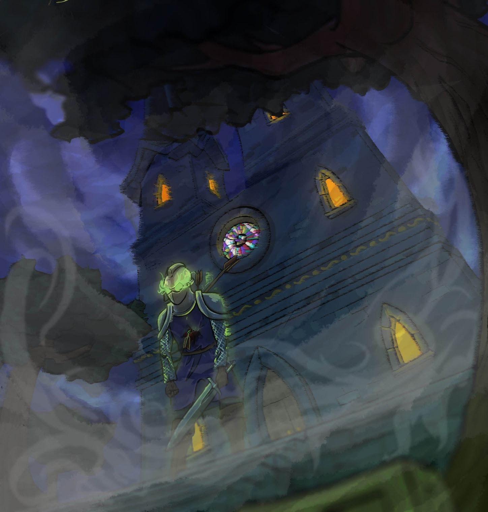
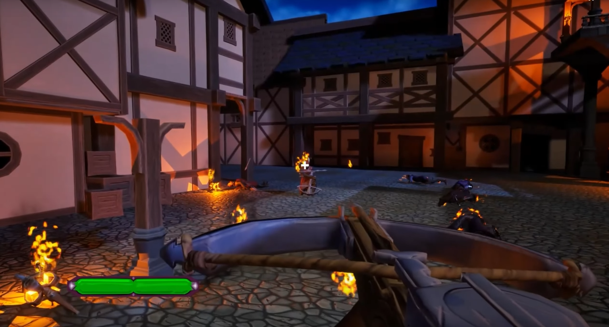
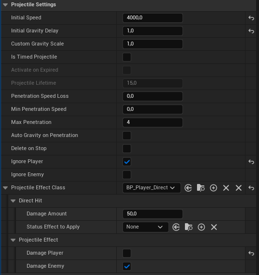

Problem & Goal
The game required a flexible projectile system that could support different projectile behaviors without writing new code for each variation. Designers needed to be able to:
- Create new projectiles,
- Adjust their movement and collision behavior,
- Change impact effects,
- And tune them rapidly for game feel.
The goal was to build a modular, data-driven architecture where core logic is implemented once in C++, and all gameplay-specific variation happens in Blueprint or through effect subclasses. The system needed to remain efficient under many active projectiles and work for both player and AI controlled units.

Solution
The projectile system is built from several focused C++ classes, each handling one part of a projectile’s behavior. This keeps the logic maintainable and allows designers to create new projectile variations without writing code.
ASCR_Projectile
- Controls movement and collision.
- Supports gravity delay (projectile flies straight first, then arcs).
- Handles penetration rules (how many targets it can pass through, and speed loss per hit).
- Activates trail and visual effects.
USCR_ProjectileEffectBase
- Defines what happens on hit.
- Serves as a base class for interchangeable effect behaviors (
USCR_DirectHitEffectandUSCR_AreaEffect).
USCR_DirectHitEffect
- Applies single-target damage.
- Can optionally trigger status effects (e.g. stun/poison—even if not used in final build).
USCR_AreaEffect
- Applies damage in a radius around the impact.
- Damage falloff is designer-tunable (linear or curve-based).
- Fully implemented but unused due to project scope.
- Can also optionally trigger status effects (e.g. stun/poison—even if not used in final build).
USCR_ProjectileLauncherComponent
- Allows any actor (player or AI) to fire projectiles.
- Handles reload timing and projectile spawn points.
- Performs vertical aim correction for AI.
Modified Object Pool
- Uses Round-Robin retrieval to keep more projectiles active in the world.
- Avoids unnecessary spawn/despawn cycles and maintains chaotic projectile density.
The result is a data-driven workflow:
Designers create new projectile types by adjusting Blueprint parameters and assigning different effect classes—no C++ changes required.

Technical Details
The projectile system works as a chain of responsibility between three layers:
1) Launching (USCR_ProjectileLauncherComponent)
- Retrieves a projectile from the pool.
- Places it at the correct spawn point with physics disabled.
- Waits for input release (player) or trigger event (AI).
- On fire:
- Detaches projectile.
- Enables movement.
- Computes AimVector.
- Calls
LaunchProjectile(AimVector).
- Starts reload timer immediately (independent of projectile lifetime).
Launcher controls when projectiles exist and who fires them.
It does not control how they fly.
2) Flight & Collision (ASCR_Projectile)
- Sets internal velocity using the aim vector and initial speed.
- Optionally delays gravity to allow a straight-first → arc-later trajectory.
- Handles penetration logic (speed reduction + max hit count).
- Detects hits via collision components.
- On hit, forwards control to the effect class.
Projectile controls movement and hit detection.
3) On-Hit Effects (USCR_ProjectileEffectBase + subclasses)
- DirectHitEffect: applies single-target damage.
- AreaEffect: applies radial damage using designer-controlled falloff curves.
- Additional effects can be added by inheriting from the base class.
Effects decide what happens when something is hit.
4) Object Pool (Modified)
- Uses a Round-Robin retrieval strategy.
- Projectiles stay in the world until needed again.
- Reduces spawn/despawn churn and maintains projectile density.
Pooling controls performance and world presence, not gameplay.
Launching (Key Method)
void ASCR_Projectile::LaunchProjectile(FVector AimVector)
{
ProjectileMovement->StopMovementImmediately();
ProjectileMovement->Velocity = AimVector * InitialSpeed;
ProjectileMovement->UpdateComponentVelocity();
// Start gravity after a delay to allow straight flight first
if (InitialGravityDelay > 0.f)
GetWorldTimerManager().SetTimer(GravityTimerHandle, this, &ASCR_Projectile::EnableGravity, InitialGravityDelay);
else
ProjectileMovement->ProjectileGravityScale = CustomGravityScale;
ActivateTrailEffect();
}The projectile calculates its own flight behavior. The launcher only decides when to fire and in which direction.
Designer Workflow
The system was built so that designers could create and tune projectiles entirely in Blueprint without needing new C++ code. Each gameplay variation comes from adjusting exposed properties and selecting which effect class the projectile uses.
Creating a New Projectile
- Duplicate an existing projectile Blueprint derived from
ASCR_Projectile. - Adjust movement parameters, such as initial speed, gravity delay, and penetration count.
- Assign visuals, including mesh and trail VFX.
- Choose an effect type (DirectHit or AreaEffect) and configure damage and falloff.
- Place the projectile into the Launcher component on any enemy or the player.
Most projectile tuning (speed, arc behavior, number of pierces, and visual expression) could be done live in-editor with immediate feedback, which made balancing combat feel fast and designer-driven.

Results
- Designers were able to create and tune new projectile variations without requesting new code, reducing programmer bottleneck during combat iteration.
- The gravity-delay flight model allowed projectiles to feel accurate at short range while still arcing at distance.
- The Round-Robin object pool let many projectiles remain active simultaneously without performance spikes or allocation churn.
- AI and player shared the same launcher logic, which kept behavior consistent and prevented duplicated systems.
- The system remained modular, meaning additional effect types (e.g., status effects, ricochets, homing) could be added by inheriting from the base effect class.